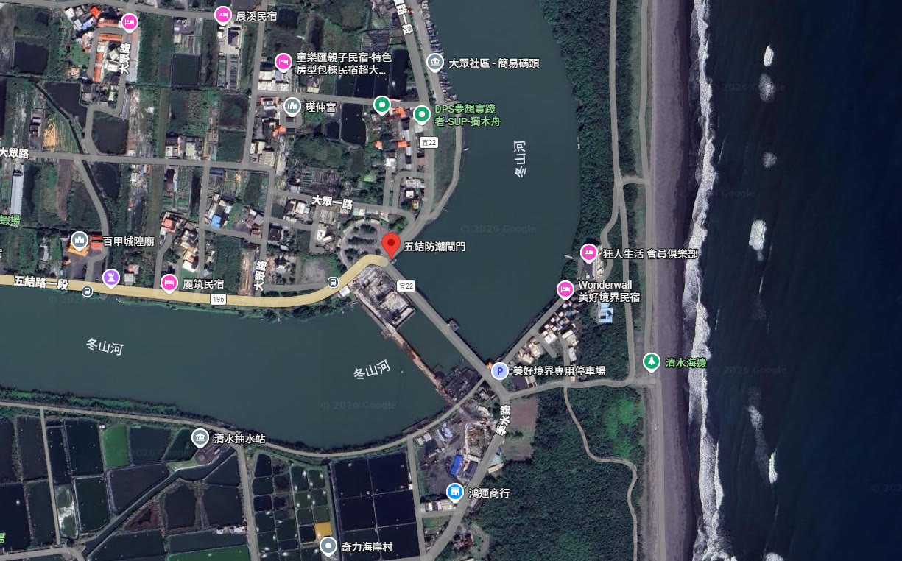
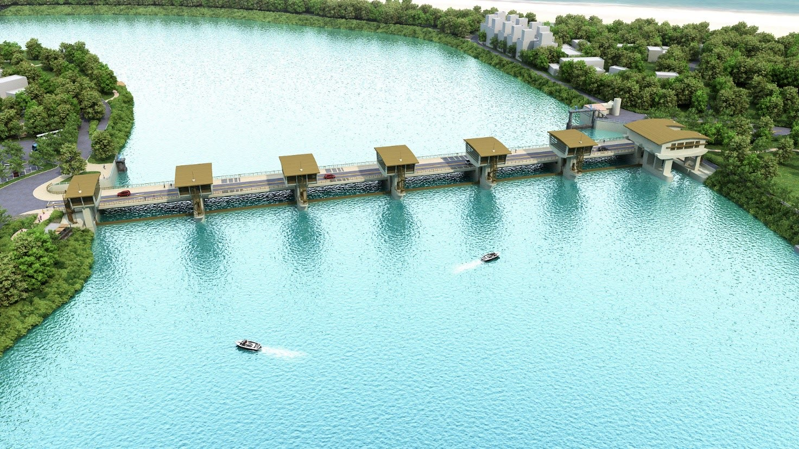

1
為什麼查風險訊號2
工程是什麼規模與功能3
有哪些風險規劃・經濟・系統4
現場發現計價・品管・施工5
導入 AI3D 風險篩檢6
專家驗證Human in the Loop7
審計判斷證據分級8
審核通知三大改善方向9
促成改善長期防洪禦潮

Q10 設計流量先後採 6 種標準，最終保守採 1,088 cms 作為目標年（2070 年）Q10
總成本 13.78 億元、總效益 9.46 億元，益本比 0.69，未比較不同流量方案
工區外堤防（1K+600 周邊）堤頂 EL3.20 m，目標年（2070 年）需 EL3.42 m，加高經費未納編
關閘期間兩岸抽水站須減排 25 cms；未見故障、停電、通訊或多機失效之備援
Q10 為 10 年重現期距洪水，即每年發生機率約 1/10（10%）的洪峰流量。區域排水以「通過 Q10 計畫洪水量」為設計標準，兼顧防洪效益與工程經濟，故以 Q10 作為閘門抗洪能力的設計基準。
益本比＝計畫總效益（如減少淹水損失）÷總成本，兩者以現值比較。大於 1 方表示計畫可行；小於 1 代表投入多於可得效益，本案 9.46÷13.78＝0.69，每投入 1 元僅換得約 0.69 元效益，若未比較替代方案，恐有資源配置不經濟之風險。
冬山河屬宜蘭縣管區域排水，治理標準為「通過 Q10 洪水、Q25 洪水不溢堤」。本案基本設計所載目標年（2070 年）所需計畫堤頂高＝10 年重現期距洪水位＋0.5 m；以 1K+600 為例，EL2.92＋0.50＝EL3.42 m。


| Q10 情境 | 洪峰 | 施作前 | 施作後 |
|---|---|---|---|
| 一般治理 2020 | 775 | 2.91 | 2.79 |
| 天然現況 2020 | 938 | 3.05 | 2.86* |
| 目標年 2070 | 1,088 | 3.17 | 2.92 |
| 關閘禦潮 | 750 | — | 2.46† |
現況 Q25（1,088 cms）直接轉為未來 Q10，缺乏趨勢分析或 CDTR 氣候情境支撐
採 1,088 cms（目標年 2070）高標準，卻未編列配套堤防加高預算，形成計畫完整性缺口
25 cms 缺口仰賴抽水站，專家質疑配置之經濟合理性
曼寧 N 值前後不一、未以實測颱風事件律定，需原始模式檔案查證
超出計畫保護標準即會淹水為客觀事實；應強調僅建閘門、未加高堤防時之風險
| 議題 | 專家意見 | 審計處理 |
| 設計流量依據 | 現況 Q25 直接轉未來 Q10，論證偏弱 | 審核通知 一(二) |
| 堤防完整性 | 目標年（2070）1,088 cms 下堤頂缺口 22 公分，須全段加高 | 審核通知 一(三) |
| 閘門與抽水站 | 通洪 750 對 775 cms，缺口仰賴抽水站 | 審核通知 一(四) |
| 水理參數 | N 值前後不一、未律定驗證 | 待補證 |
| 模擬情境 | 聚焦保護標準；強調未加高堤防之風險 | 修正模型解讀 |
嗣後辦理相關工程，強化經濟可行性評估；比較不同計畫洪水量方案之成本與效益，擇定最佳方案
併同本工程研謀施工範圍外堤防（1K+600 周邊）加高作業，避免局部改善後仍留系統弱點
對兩岸抽水站遭遇洪災或功能減損等極限情形，先行量化評估並研謀因應措施
AI 讓風險被看見
專業 讓證據可被信賴
審計 讓改善真正發生